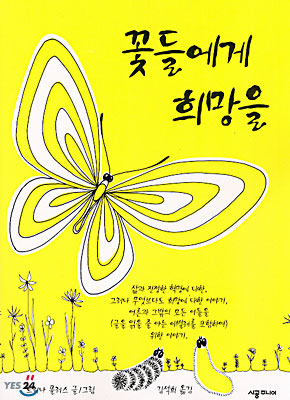
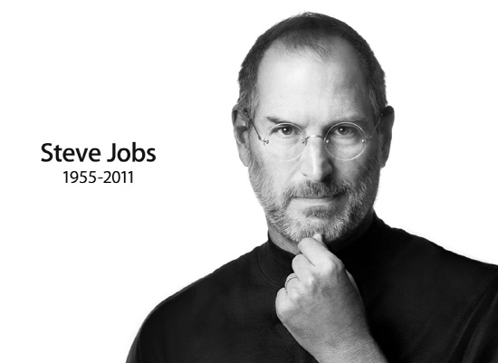
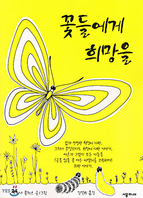
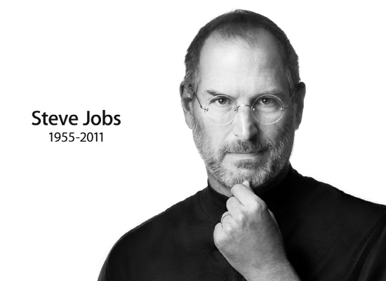

Book, Movie, Role Model
'무엇을 향해 올라가는가?'
라는 의문으로 진행되는 스토리이다. 얼핏 표지만 봐서는 읽기 쉬운 동화책 같지만 우리나라 사회를 풍자하는 듯한 느낌을 받았다. 우리나라 사회에 비유하면 학생들은 무엇을 보고 위로 올라가려고 열심히 애를 쓰며 공부해나가는지, 누구를 위해 하는지 물어보게 되는 책이다.
이 책을 읽고 나의 진로를 나의 적성에 맞게 설게해야 겠다는 생각을 하게 되었고 나의 적성을 찾게 해주었으며, 우리나라 사회에 대한 의식을 변화시켜줬다.
나의 적성에 맞는 진로를 결정하기 위해 특성화 고등학교인 선린을 택할 때 많은 도움이 되었던 책이다.
 2010년 초등학교 6학년 때 영화를 좋아하는 친구인 상민이의 강력추천으로 보게되었다. 친구는 자신이 존경하는 감독과 배우가 만든 영화라서 무척이나 좋아했던 기억이 떠오른다. 처음 이 영화의 초반 부분을 봤을 땐 어떤 식으로 스토리가 전개되가는지 전혀 이해할 수 없었지만 중간 부분의 설명을 보고 이해를 하니 재밌어졌고, 후반부분에는 정신을 놓고 보았던 기억이 있다. 꿈을 주제로 다루는 영화라 이미지가 신비한 느낌으로 다가왔고 배우들의 연기와 감독의 스토리 설정이 절묘하게 잘 이루어져 보는 내내 꿈 속에 있는듯한 기분이었다. 스토리 내용을 완벽하게 이해하기 위해서 영화관에서 두 번 본 유일한 영화이다.
2010년 초등학교 6학년 때 영화를 좋아하는 친구인 상민이의 강력추천으로 보게되었다. 친구는 자신이 존경하는 감독과 배우가 만든 영화라서 무척이나 좋아했던 기억이 떠오른다. 처음 이 영화의 초반 부분을 봤을 땐 어떤 식으로 스토리가 전개되가는지 전혀 이해할 수 없었지만 중간 부분의 설명을 보고 이해를 하니 재밌어졌고, 후반부분에는 정신을 놓고 보았던 기억이 있다. 꿈을 주제로 다루는 영화라 이미지가 신비한 느낌으로 다가왔고 배우들의 연기와 감독의 스토리 설정이 절묘하게 잘 이루어져 보는 내내 꿈 속에 있는듯한 기분이었다. 스토리 내용을 완벽하게 이해하기 위해서 영화관에서 두 번 본 유일한 영화이다.
내가 가장 존경하는 사람이다. 비록 지금 이 세상에는 존재하시지 않지만 애플이란 회사를 설립하셨고, 지금의 우리 세상을 스마트폰 세상으로 만들었다라고 해도 과언이 아니다. 스티브 잡스 덕분에 세상이 일정 부분 스마트폰으로 돌아가서 정보에 접근하기가 쉬워졌고, 빠르게 일을 처리할 수 있게 되었다. 스티브 잡스의 자서전을 보고 느낀 것이 많다. 그도 사람이었다는 것을.. 남들처럼 실수도 많이하고 실패도 많이했다. 하지만 곧 훌훌털고 새로운 일을 시작했다. '누가 내 치즈를 옮겼을까' 라는 책에서 '새로운 치즈를 찾는다'는 말은 스티브 잡스에게 어울린다고 생각각한다. 그는 많은 실패와 시련을 겪었지만 여러가지 분야를 IT와 접합시키면서 세상의 발전에 많은 기여를 했다. 나 역시 스티브 잡스처럼 세상에 많은 발전을 기여하는 사람이 되고 싶다.
'무엇을 향해 올라가는가?'
라는 의문으로 진행되는 스토리이다. 얼핏 표지만 봐서는 읽기 쉬운 동화책 같지만 우리나라 사회를 풍자하는 듯한 느낌을 받았다. 우리나라 사회에 비유하면 학생들은 무엇을 보고 위로 올라가려고 열심히 애를 쓰며 공부해나가는지, 누구를 위해 하는지 물어보게 되는 책이다.
이 책을 읽고 나의 진로를 나의 적성에 맞게 설게해야 겠다는 생각을 하게 되었고 나의 적성을 찾게 해주었으며, 우리나라 사회에 대한 의식을 변화시켜줬다.
나의 적성에 맞는 진로를 결정하기 위해 특성화 고등학교인 선린을 택할 때 많은 도움이 되었던 책이다.
2010년 초등학교 6학년 때 영화를 좋아하는 친구인 상민이의 강력추천으로 보게되었다. 친구는 자신이 존경하는 감독과 배우가 만든 영화라서 무척이나 좋아했던 기억이 떠오른다. 처음 이 영화의 초반 부분을 봤을 땐 어떤 식으로 스토리가 전개되가는지 전혀 이해할 수 없었지만 중간 부분의 설명을 보고 이해를 하니 재밌어졌고, 후반부분에는 정신을 놓고 보았던 기억이 있다. 꿈을 주제로 다루는 영화라 이미지가 신비한 느낌으로 다가왔고 배우들의 연기와 감독의 스토리 설정이 절묘하게 잘 이루어져 보는 내내 꿈 속에 있는듯한 기분이었다. 스토리 내용을 완벽하게 이해하기 위해서 영화관에서 두 번 본 유일한 영화이다.내가 가장 존경하는 사람이다. 비록 지금 이 세상에는 존재하시지 않지만 애플이란 회사를 설립하셨고, 지금의 우리 세상을 스마트폰 세상으로 만들었다라고 해도 과언이 아니다. 스티브 잡스 덕분에 세상이 일정 부분 스마트폰으로 돌아가서 정보에 접근하기가 쉬워졌고, 빠르게 일을 처리할 수 있게 되었다. 스티브 잡스의 자서전을 보고 느낀 것이 많다. 그도 사람이었다는 것을.. 남들처럼 실수도 많이하고 실패도 많이했다. 하지만 곧 훌훌털고 새로운 일을 시작했다. '누가 내 치즈를 옮겼을까' 라는 책에서 '새로운 치즈를 찾는다'는 말은 스티브 잡스에게 어울린다고 생각각한다. 그는 많은 실패와 시련을 겪었지만 여러가지 분야를 IT와 접합시키면서 세상의 발전에 많은 기여를 했다. 나 역시 스티브 잡스처럼 세상에 많은 발전을 기여하는 사람이 되고 싶다.